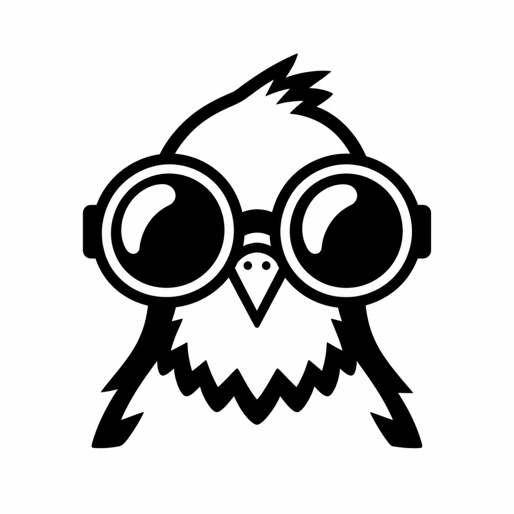

Camera ACIL212 fisheye

PigeonVision STANFORD SSI / IRECLaunch view
10,000 ft class / 6-inch class / Two cameras
Received panorama
ON THE PADT + 0.00 s
Altitude AGL0 m
Vertical speed0 m/s
Slant range0.10 km
Link margin¹pending
Turn your view, not your position. This is a panoramic image, not reconstructed 3D.
Camera views
Pause to inspect the individual source images at the same instant.
Camera BCIL212 fisheye
Stitched on the ground
The outward stitch discards inward-looking body pixels. That is why the cylinder disappears.
The hardware
IN DESIGN / KICADOn the rocket
- Two camerasCSI-2 video
- Carrier + CM5 ↗Encode, record, send over Ethernet
- E200 radioConvert data to RF
- RF board ↗Amplifier + filter
- Transmit antenna
On the ground
- Receive antenna
- E200 radioRecover the two video streams
- ComputerDecode, stitch, look around
Settings Camera geometry & timing
Edits switch to the source model. They do not change the recorded downlink. Lens projection is nominal; measured calibration is still needed.
Model & link assumptions ¹ Link margin includes a 10 dB reserve
Source sampling
Lens blur, sensor noise and vibration are not calibrated. Recorded clips assume ideal attitude and camera timing.
Stitching selects directions from two camera positions. Nearby hardware can jump or ghost at the seam. Panning cannot reveal hidden surfaces.
Downlink & playback
Playback diagnostics appear while playing.
30 captured frames per second. No simulated RF packet loss.
Flight & geometry
Saved OpenRocket M2400T flight: 3,191 m apogee. A three-second pad hold precedes ignition.
The exterior uses the supplied OpenRocket dimensions. Camera mounts, iris placement and recovery motion are provisional. The sequence ends under drogue.
The desert terrain is procedural, not a model of the launch site. Encoding is real; optics, flight and radio performance remain estimates.
Source & reproduction ↗